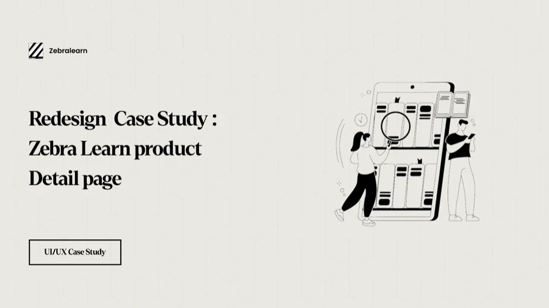
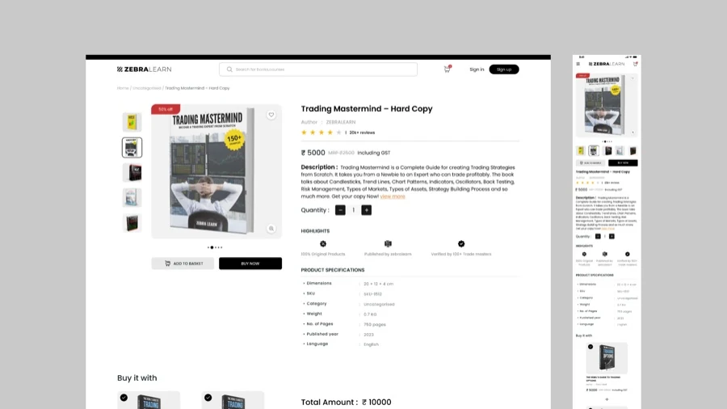
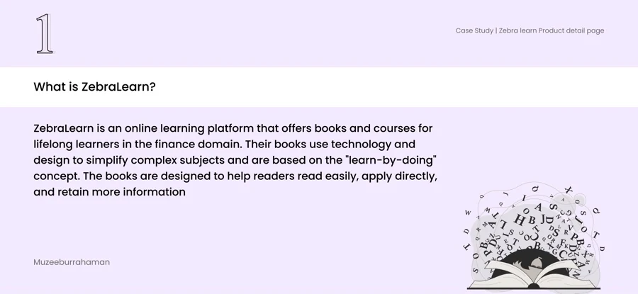
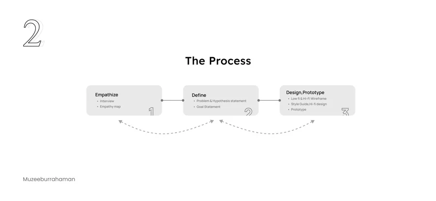
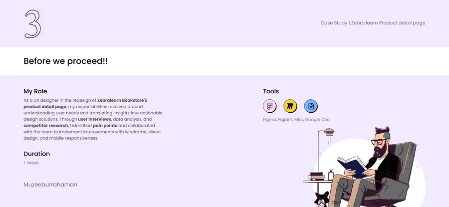
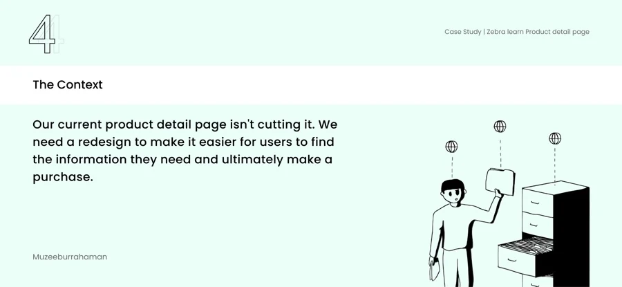

A learning-platform redesign that made complex content feel effortless
The product didn't have a design system problem. It had a decision problem. Every small UI choice turned into a discussion.
Patterns weren't shared. Components couldn't evolve. "If it's not in the library, we don't build it."
So teams either argued or built one-offs. Delivery slowed down. And a lot of small UX fixes never made it onto the roadmap.
I pushed to rebuild the system in a way people would actually use.
Problems
- UI decisions were constantly re-debated.
- The component library blocked progress instead of enabling it.
- Inconsistencies slowed down delivery.
Solution
- Rebuilt the system from the inside out.
- Defined tokens, patterns, and rules that map to code.
- Focused on adoption over completeness.
Results
- Adopted across multiple product pods.
- FE devs rated the system 4.4/5 for speed and efficiency.
- Repeated UI debates dropped, QA friction decreased.
- Systemic UX improvements.






The product looked fine. Until you tried to build anything in it.
Every UI decision turned into a discussion. The component library existed, but it was too limited to be useful and too rigid to evolve.
"If it's not in the library, we don't build it." This was the default answer to most things.
So teams either argued, hacked around it, or shipped poor UX. As a surprise to no one, delivery slowed, issues piled up.
It was clear this wouldn't be sustainable. So I pushed for a proper design system, one that teams could actually use. It wasn't an easy sell, but over time the need became obvious.
With no full-time DS team, I chose speed and adoption over purity.
No one was working on the system full-time, so aiming for a "perfect" system wasn't realistic. The biggest goal was adoption, and that meant making trade-offs.
I worked closely with developers to accelerate setup. Instead of building everything from scratch, we agreed to use existing foundations and align the UI to our brand, rather than reworking component logic.
To keep the system manageable, we set a few clear rules:
- Add a component only if at least two teams need it
- Build for current needs, not hypothetical ones
Setting up a solid token structure.
We built the system on an Atomic Design approach, supported by a shared token system between Figma and code.
I set up tokens for color, typography, spacing, radii, and heights, and defined a three-layer token structure:
- Primitive: raw values
- Semantic: meaning-based tokens
- Component: specific overrides when needed
Making good UX the default
I used the system to fix long-standing UX issues without turning each one into a debate. Instead of proposing isolated improvements, I embedded them directly into the foundation.
- Accessibility by default: color tokens set so text and surface combinations consistently pass WCAG AA contrast.
- Usable touch targets: all interactive elements meet a minimum of 44px, even when visually smaller.
- Safer interactions: introduced proper destructive actions, previously missing from the library.
This way, teams didn't have to "opt in" to better UX. It came built into the system.
Things shipped faster, and with less friction
A design system is never "done," but within six months we saw clear impact. Developers reported faster delivery, rating it 4.4/5 on average for speed and efficiency. In some cases, work that used to take a week was done in a day.
At the same time, alignment and QA effort dropped significantly, since many inconsistencies were handled upfront by the system.
Average rating for speed & efficiency
Yeah same
Alignment & QA effort dropped significantly
Systemic UX improvements across the platform
Most design problems aren't design problems — they're alignment problems.
Once decisions were clearly defined in the system, a lot of friction disappeared. Teams spent less time debating small details, fewer inconsistencies reached development, and work moved faster.